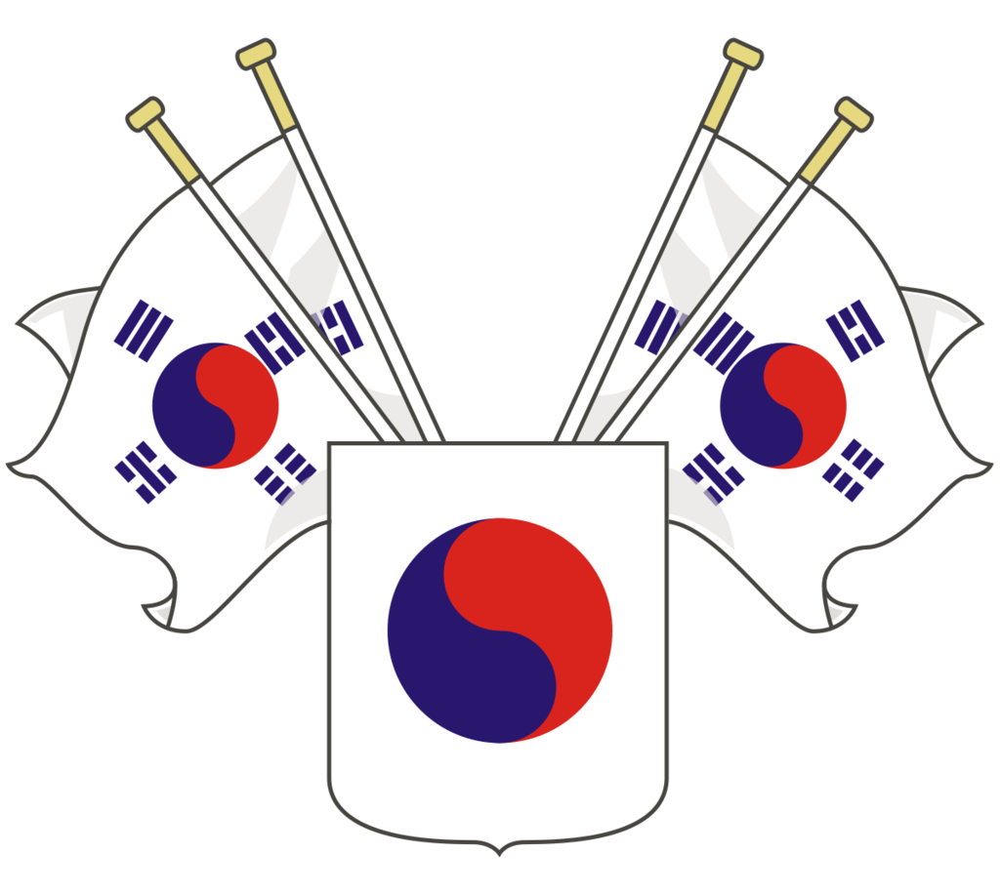

PROJECT KOREA
PROJECT KOREA: WAR OF INDEPENDENCE

PROJECT KOREA
WAR OF INDEPENDENCE
국가
한반도
대한민국 임시정부
대한민국
중국
대륙
중화민국 국민정부
중화소비에트공화국
대동아
공영권
일본 제국
만주 제국
개요
PROJECT KOREA: WAR OF INDEPENDENCE
프로젝트 코리아: 독립전쟁
 대한민국 임시정부
대한민국 임시정부 중화민국 국민정부
중화민국 국민정부 일본 제국
일본 제국